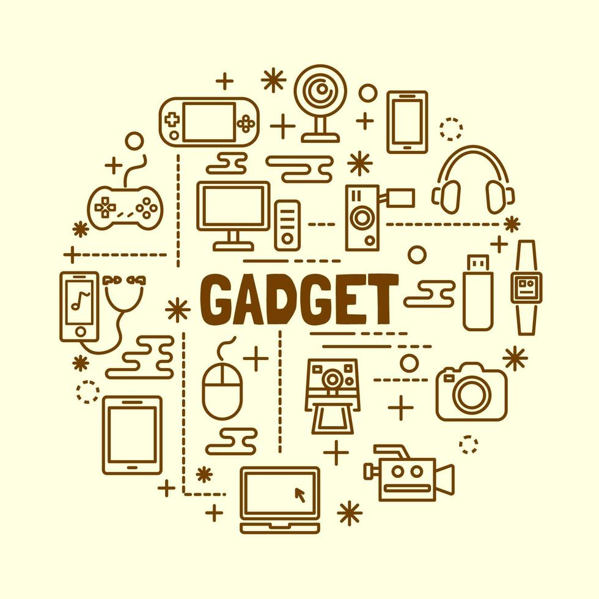

2024 Yılının En Çok Beklenen Gadget İncelemeleri
Teknoloji dünyasında
hızla gelişen gadget'lar, kullanıcıların günlük yaşamlarını
kolaylaştırmaya ve eğlenceli deneyimler sunmaya devam ediyor. 2024 yılında
piyasaya çıkan ve büyük ilgi gören bazı gadget'ları detaylı bir şekilde
inceleyelim:

1. Apple Vision Pro - Giyilebilir AR/VR Gözlük
Tasarım:
Apple’ın yeni AR/VR gözlüğü Vision Pro, minimalist ve şık tasarımı ile
dikkat çekiyor. Yüksek çözünürlüklü OLED ekranları ve ergonomik yapısı,
uzun süreli kullanımlarda bile rahatlık sağlıyor. Performans: Vision Pro,
Apple'ın M1 işlemcisi ile destekleniyor, bu da gözlüğün yüksek
performanslı grafik işlemleri ve uygulamalar için güçlü bir cihaz olduğunu
gösteriyor. Metaverse uygulamalarından artırılmış gerçeklik deneyimlerine
kadar geniş bir yelpazede kullanılabiliyor. Özellikler: Gerçek dünya ile
dijital içerikleri sorunsuz bir şekilde birleştiren AR deneyimleri,
eğitim, eğlence ve iş dünyasında büyük bir potansiyele sahip. Ayrıca,
kullanıcılar dokunmatik veya sesli komutlarla cihazı kolayca
yönetebiliyor.
2. Samsung Galaxy Watch 7 - Akıllı Saat
Tasarım: Samsung’un
yeni akıllı saati Galaxy Watch 7, yuvarlak ekranı ve klasik saat
tasarımıyla hem sportif hem de zarif bir görünüm sunuyor. AMOLED ekranı,
güneş ışığında bile net bir görüntü sağlıyor. Performans: Galaxy Watch 7,
Exynos işlemcisi ve gelişmiş sensörleriyle sağlık ve fitness takibi
konusunda oldukça başarılı. Kan oksijen seviyesi, EKG ölçümü ve uyku
takibi gibi özellikler de mevcut. Pil Ömrü: Uzun süreli pil ömrü sunan
cihaz, tek bir şarjla birkaç gün boyunca kesintisiz kullanım
sağlayabiliyor. Ayrıca hızlı şarj özelliği de bulunuyor.
3. Sony
WH-1000XM5 - Gürültü Önleyici Kulaklık
Tasarım: Sony’nin popüler WH
serisinin yeni modeli, hafif ve konforlu tasarımıyla uzun süreli
kullanımlar için ideal. Yumuşak kulak yastıkları ve ayarlanabilir baş
bandı sayesinde her kullanıcıya uyum sağlıyor. Gürültü Engelleme:
Geliştirilmiş aktif gürültü önleme teknolojisi ile çevredeki tüm
gürültüleri izole ederek, müzik dinleme veya iş toplantıları için mükemmel
bir ortam sağlıyor. Özellikle uçak, tren gibi gürültülü ortamlarda çok
etkili. Ses Kalitesi: Sony'nin özel LDAC teknolojisi sayesinde ses
kalitesi oldukça yüksek. Derin baslar ve net tizlerle mükemmel bir müzik
deneyimi sunuyor.
4. Oculus Quest 3 - Kablosuz VR Başlığı
Tasarım: Oculus
Quest 3, selefine göre daha hafif ve ergonomik bir yapıya sahip. Kablosuz
olarak çalışabilmesi, kullanıcıların özgürce hareket edebileceği bir sanal
gerçeklik deneyimi sunuyor. Performans: Snapdragon XR2 işlemcisi ile
donatılan cihaz, oyunlar ve VR uygulamaları için oldukça yüksek bir
performans sunuyor. Grafik kalitesi ve düşük gecikme süresiyle dikkat
çeken Quest 3, oyun severler için ideal bir tercih. Oyunlar ve İçerik:
Oculus’un geniş oyun kütüphanesi ve artırılmış gerçeklik özellikleri,
kullanıcılara hem eğlenceli hem de eğitici içerikler sunuyor.
5. Google
Pixel Tablet - Akıllı Ev Tableti
Tasarım: Google’ın Pixel serisine eklenen
yeni tablet, ince ve hafif bir yapıya sahip. Evin her yerine taşınabilecek
bir tasarımla geliyor. Özellikler: Android 14 ile uyumlu olarak çalışan bu
tablet, akıllı ev sistemleriyle entegre bir şekilde çalışabiliyor. Google
Assistant ile sesli komut vererek akıllı ev cihazlarını kontrol
edebilirsiniz. Performans: Snapdragon 8 serisi işlemci ile hızlı ve
sorunsuz bir performans sunuyor. Ekran kalitesi ve ses sistemi, özellikle
film izlemek veya video konferanslar için oldukça ideal. Sonuç: 2024 yılı,
kullanıcıların ilgisini çekecek pek çok inovatif gadget ile dolu.
Giyilebilir teknoloji, VR/AR deneyimleri ve akıllı ev cihazları gibi
alanlarda büyük yenilikler sunan bu cihazlar, teknolojinin günlük
hayatımıza nasıl daha fazla entegre olacağını gözler önüne seriyor.
Özellikle Apple, Samsung, Sony ve Oculus gibi büyük markalar,
kullanıcıların beklentilerini karşılayacak yeni modelleriyle öne çıkıyor.